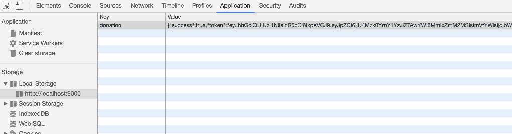

Assuming our donation-web app api has been secured with JWT tokens, revised donation-service classes to authenticate against and use these secure routes.
When you first log in, modify app such that existing donations are retrieved from donation-web. Currently we only show donations made my the current user.
...
constructor(data, ea, ac) {
...
this.getDonations();
}
getDonations() {
this.ac.get('/api/donations').then(res => {
this.donations = res.content;
});
}
...
Note: this solution will be invalidated by our forthcoming approach to authenticated routes, and will need to be changed later.Notice that, when you make a donation - the actual candidate's name does not appear. Why is this? In chrome, debug into the app to explore why. See if you can fix this.
There are two approaches:
This is a modification of the donation-web api for creating donations:
exports.makeDonation = {
auth: false,
handler: function (request, reply) {
const donation = new Donation(request.payload);
donation.candidate = request.params.id;
donation.save().then(newDonation => {
Donation.findOne(newDonation).populate('candidate').then(donation => {
reply(donation).code(201);
});
}).catch(err => {
reply(Boom.badImplementation('error making donation'));
});
},
};When a donation is created, it populates the candidate field. No further modification should be neccessary.
You must be running the jwt enabled version of the donation-web service to test these additions.
This is a sophisticated change to the AsyncHttpClient class, but implemented in very concise code.
First, change the constructor in import the EventAggregator:
import { inject } from 'aurelia-framework';
import { HttpClient } from 'aurelia-http-client';
import Fixtures from './fixtures';
import { EventAggregator } from 'aurelia-event-aggregator';
import { LoginStatus } from './messages';
import { User } from './models';
@inject(HttpClient, Fixtures, EventAggregator)
export default class AsyncHttpClient {
http: HttpClient;
ea: EventAggregator;
constructor(httpClient, fixtures, ea) {
this.http = httpClient;
this.http.configure(http => {
http.withBaseUrl(fixtures.baseUrl);
});
this.ea = ea;
}
...Now introduce a new method to authenticate a user to the api:
authenticate(url: string, credentials: {email:string, password:string}) {
this.http
.post(url, credentials)
.then(response => {
const status = response.content;
if (status.success) {
this.http.configure(configuration => {
configuration.withHeader(
'Authorization',
'bearer ' + response.content.token,
);
});
}
this.ea.publish(new LoginStatus(true));
})
.catch(error => {
this.ea.publish(new LoginStatus(false, 'service not available'));
});
}In the above (invoked in the next step from donation-service), will post to an authenticate url - and if successful, attaches the returned token to all subsequent invocations. It will also store the token in local storage in case our app is suspended. However, we are not really making use of this yet.
An accompanying clear method:
clearAuthentication() {
this.http.configure(configuration => {
configuration.withHeader('Authorization', '');
});
}DonationService can now have its login/logout methods use the new methods.
First, remove retrieval of users and donations in the constructor:
constructor(data, ea, ac) {
this.methods = data.methods;
this.ea = ea;
this.ac = ac;
this.getCandidates();
}the users and candidates are protected routes, and will fail if we attempt to read them if we are not authenticated.
Now we can implement login/logout - which are considerably simplified:
login(email, password) {
const user = {
email: email,
password: password
};
this.ac.authenticate('/api/users/authenticate', user);
} logout() {
this.ac.clearAuthentication();
this.ea.publish(new LoginStatus(false));
}Try this now and see if it works as expected. In particular make sure you can successfully access protected routes.
We can save the tokens in Local Storage (in the browser), which might be useful in certain circumstances.
In the authenticate method in AsyncHttpClient we can store the token:
authenticate(url, user) {
...
if (status.success) {
localStorage.donation = JSON.stringify(response.content);
this.http.configure(configuration => {
configuration.withHeader(
'Authorization',
'bearer ' + response.content.token,
);
});
...
...
}This stores the token in the key donation. We can inspect this in the browser developer tools:

We should takes steps to explicitly clear the token from local storage in our clearAuthentication() method:
clearAuthentication() {
localStorage.donation = null;
this.http.configure(configuration => {
configuration.withHeader('Authorization', '');
});
}Try the following experiment. Log in to the service - and then exit the browser (without logging out). Open the browser again - and see if the token is still in local storage.
Because it should be - we can adapt the app to bypass the login screen in this situation (next step).
We can then introduce a new method in AsyncHttpClient which can recover this token (if present), and install it in our default request headers for subsequent api access:
isAuthenticated() {
let authenticated = false;
if (localStorage.donation !== 'null') {
authenticated = true;
this.http.configure(http => {
const auth = JSON.parse(localStorage.donation);
http.withHeader('Authorization', 'bearer ' + auth.token);
});
}
return authenticated;
}This also returns true if it found a token.
We introduce an accessor for this method in DonationService`:
isAuthenticated() {
return this.ac.isAuthenticated();
}This can be enable access to this facility from other components that can only see DonationService.
Finally, if the token is found, we need to switch to the home router then the app launches.
First, in the App class, change the constructor to the following:
@inject(Aurelia, EventAggregator, DonationService)
export class App {
router: Router;
ds: DonationService;
constructor(au: Aurelia, ea: EventAggregator, ds: DonationService) {
this.ds = ds;
ea.subscribe(LoginStatus, msg => {
this.router.navigate('/', { replace: true, trigger: false });
this.router.reset();
if (msg.status === true) {
au.setRoot('home');
} else {
au.setRoot('app');
}
});
}
...The only major change in the above is that we are injecting a dependency on DonationService.
Also in the App class, introduce the following function:
attached() {
if (this.ds.isAuthenticated()) {
this.au.setRoot('home').then(() => {
this.router.navigateToRoute('dashboard');
});
}
}This makes use of the DonationService to determine if the token is available in local storage. If it is, we load the Home router.
Archive of the lab so far:
Deploy the donation-web & donation-client apps. There are two potential scenarios:
index.html + scripts to the public folder of the donation-web appMake sure that src/sercices/fixtures.js contains the correct url in each instance.
If you are continuing your journey with Aurelia, these resources may be useful:
One of he best books on the framework:
The starting point for all things Aurelia:
In particular this tutorial:
This video here is a useful overview + background:
If you would like a holistic view of ESNext - this video here from the same presenter: